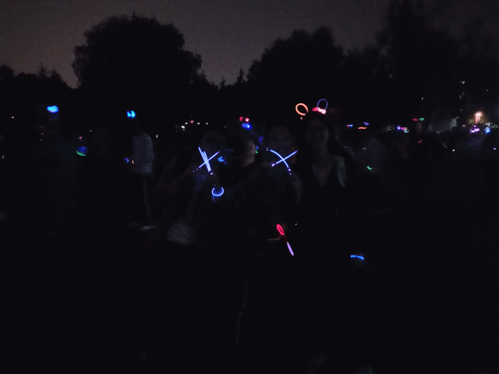

今年的紫金港也是紫色的 | 紫色校园日系列活动

今年的紫色校园日，我们在浙江大学紫金港校区的情人坡向夜跑的同学们发放紫色的荧光棒，并向Ta们解释了紫色校园日的由来和意义，同时邀请Ta们与我们一起合照并摆出反对校园霸凌的手势。

第二天，我们在浙江大学紫金港校区的咖啡厅内举行了《月光男孩》的观影活动。观影结束后，大家还关于影片和校园霸凌发表了自己的看法。


阿园：
“本来对蹭别人主办的活动来进行倡导的这一行为感到十分自然，但文文的一番话使我开始反思，我们这么做是正确的吗？是道德的吗？是发起者的人品有问题吗？无论如何，能在不断紧缩的缝隙中找到发声的空间实属不易，犹豫的瞬间可能就失去啦！所以在反思之前先要牢牢抓住呀！”

漪柔：
有点小小的激动，感觉做了一直想做的超酷的事情。
虽然也会感觉自己有点小紧张加上逻辑不太清晰所以在很短的时间里没法比较全面地向小朋友们科普紫色校园日或者是求支持。
不过遇到的都是很配合的小朋友（除了有一个不太友好的男生...一瞬间有点伤心）。
没法提供什么技术支持或者是很棒的idea，只能高举双手表示会全力协助我们倡导小组所有活动。
大力：
校园倡导要做的就是通过我们行动慢慢去影响身边的同学朋友，从小范围到大范围再到我们整个社会。我很庆幸，在紫色校园日这个特殊的日子里，向七八个小团队传播了关于LGBT校园霸凌的知识，也得到了对校园霸凌零容忍的支持，我想在他们知道LGBT、校园霸凌、性别平等这些概念后，会促进他们对性少数群体的认可以及向他们身边的小伙伴传递这样的价值观；也很开心在倡导的时候让一些小伙伴们关注了我们酷儿论坛，让沃潭逐步壮大了呢。最重要的一点就是应该牢牢把握天时地利人和，借机搞事是我们行动主旨，🔟⑨大的胜利举办，竺院的荧光夜跑都为我们创造好了时机。“响应🔟⑨大号召，反对校园霸凌”我们的口号也回荡在的紫色的情人坡。

丸子：
每次做倡导，我都会把它想象成一次进入田野的人类学实践。不同的是，人类学田野调查是怀着一套预先形成的基本预设、观点看法、组织形式、调查方法和预期目标进入这个现实世界的，而我们的倡导活动虽然在技术性和策略性上也有必不可少的定位和目标，但个体的自由度往往高于了被一整套社会科学基本视角和现代科学管理方法严格限制着的人类学工作者，因而我的态度、观点也时刻在与外界的互动和交锋中处于激变、流动的状态。之前认为，不真正钻进田野，只在自己的脑海里耕耘意识素材，的确有远离真实世界的风险；然而进入田野也会给人一种似乎“接触到了掩藏在表面下的真实”的错觉，以为已经抓住了那个被幻觉掩盖着的唯一确定的真实，却意识不到我们从人群中得到的反馈也往往囿于诸种情境性因素和微观权力关系的限制，所谓的真实也时刻处于流动和弥散中。在这样的基本前提之下，“感知力”和“好奇心”就成为了最重要的东西，不仅要体会到当时当地的特定场景中自己与对方所处的微观权力场，更要主动打破特定的权力关系，在权力关系不同圈层的“视差”（视野转换）之间追踪到“真实”变化的轨迹。
不过志愿者和同学的交流其实也是相互建构的过程。陌生人状态是一个稳定的双方接受的状态。当我们突然发问，打破这个状态之时，尴尬感随之袭来，这时双方为了逃避尴尬，都会迅速回落到另一个确定的关系中（比如，彼此配合着把这个流程走完），双方都从这个过程中重新获得了刚才失去的确定性和安全感，尴尬也随之消失。其中，被访者把自己建构为一个善意的配合的陌生人，倡导者也往往会放下“社会公义的声张者”这一崇高形象，把自己建构为一个“就把这套流程走完”或者“只要我把荧光棒发完就好了”这样一个完成指标的被指派任务的雇工的形象。最后就成了一个双方都走走过场的相互配合的表演（然而双方似乎都获得了自己想要的结果）。

文文：
我是和倡导组的小伙伴仔仔组成一队一起进行的倡导，显然她是觉得我在酷儿论坛待了这么久一定很有做倡导的经验（然鹅一直做线上工作的我并没有）这也就解释了为什么在刚开始倡导的时候都是她先搭话并解释紫色校园日的相关内容（向仔仔同学道歉并为她鼓掌！）在她的鼓励下我后来也终于鼓起勇气主动向身边的同学进行倡导。
这次的倡导活动在多个方面都让我真实地体会到为什么说让志愿者参与到活动中也是一个赋权的过程。（尤其是对于像我这样很怂的人…）
首先是确认进行倡导的对象并开启话题的步骤，即使在开始之前进行了演练，当对象换成陌生的同学后，我就很难上前搭话。就像上面说的，看到了仔仔是如何向同学解释的，并且大多数的同学都乐于接受我们合照的请求之后，我内心的不安就消解很多。之后如果还有类似的活动，有了这次的经验我觉得我可以更好地进行倡导。
还有一个是最后喊”响应🔟⑨大号召，反对校园霸凌”口号。一行人对于到底要不要喊口号这件事讨论或者说纠结了很久，甚至思考起了利用荧光夜跑的活动进行我们的反霸凌倡导是否合理的问题。但是当最后大力在毫无预兆的情况下带头先喊出响应🔟⑨大号召的时候，其余的小伙伴就一个接一个地跟上放声大喊反对校园霸凌。甚至喊完一遍还觉得不够又一起完整地喊了一遍口号。在后来跟着大声喊口号的时候，我是非常感动的。因为大家一起喊所以有一种“你不是一个人”的感觉，虽然本来就是大家在一起倡导，但是当这种本来很虚无的感觉化为大家一起喊口号这个事件真实地发生了之后，带给我的是因为被陪伴而产生的温暖和敢于发声的勇气。
当向身边人倡导的部分结束后，所有志愿者都聚到一起就遇到的问题进行讨论。大家都发现在倡导的过程中，我们更愿意与女生进行交流，这可能是由于我们有着“女生对于这样的话题更容易接受”的预设。在这一点上仔仔却有着不同的观点，她会和一些我们认为看上去很难沟通的男生交流并耐心解释，并且这些男生大都也都愿意与我们合照。在这个过程中我们也改变了固有的观念，使我们今后的活动能够影响到更多的人。但我们也发现了一个有趣的现象，虽然男生不像我们想象中的那么排斥与我们交流，但是拒绝合照的比例却是男生更高一些。尤其是当对象时两位男生时，他们会问是不是因为他们看上去很“基”，而两位女生的组合则不会有这样的疑问。这一现象或许也值得进一步探究背后的原因。